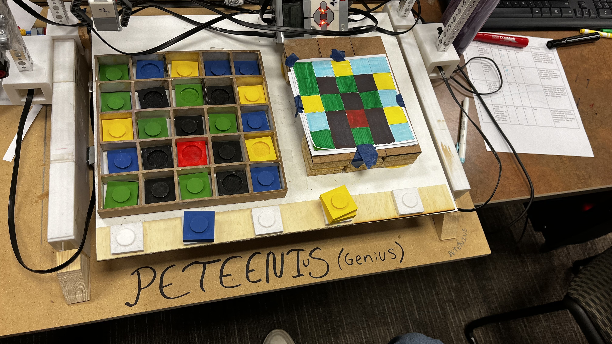

GridArt Robot
The GridArt Robot bridges art and STEM by transforming 2D drawings into physical mosaics made of coloured
tiles. Build with EV3 Legos, Tetrix kits, and custon 3D-printed and laser-cut parts, the robot uses seven
motora and four sensors to read, pick up, and place tiles with precision across a 5x5 grid. It operates
through three main stations: a reference image board, a tile supply station, and a blank grid for tile
placement. It scanned each cell box for its colour, selected the corresponding tile, and placed it on the
grid to form a mosaic.
Mechanically, the robot was built on a four-motor drive system that enables 3 dimensional movement across
the work space. This is achieved through a rack-and-pinion system for the X-Y axis, and a thread-driven CNC
party for vertical control. A dedicted arm mechanism was used for scanning, gripping, and placing tiles. The
gripper claws and colour sensor housing were 3D printed to accommodate tight tolerances and reduce wear over
time. Most of our mechanical debugging revolved around 3D printing and laser cutting errors and abnormalities
during manufacturing. The imapcts of these errors were mitigated through our software design.

In terms of software design, we programmed the robot using C++ on the EV3 platsome with a combination of
sensir data and grid logic to manage tile placemetn. One of the trickiest parts was accounting for mechanical
inaccuracies; small errors in movement or sensor readings tended to accumulate over time and throw off the whole
mosaic. To address this, I developed an inaccuracy counter that actively tracked deviation in position and tile
placement, which alled the robot to make micro-adjustments mid-run, providing a sense of self-correction without
the hassle of re-calibration. This feature significantly improved long-run accuracy and made the robot much more
reliable.
The trigger mechanism is modeled after a crossbow, designed to securely hold and release the projectile
with minimal force. Initially prototyped from aluminum, the final version was constructed from wood for
increased performance and decreased mass. A guiding ramp was added to ensure a smooth and accurate launch.
